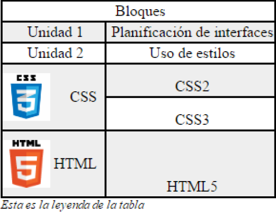

a. La fuente base de toda la página es de color azul oscuro, de tipo Verdana, con un tamaño 0.9 veces la letra por defecto del navegador y un espaciado entre líneas de 1,4 em.
b. Los títulos de nivel h1 deben estar centrados, escritos en letras capitales (la primera letra de cada palabra en mayúscula) y deben tener un borde de 1px con un padding de 10px y un acabado redondeado.
c. El texto que se incluye en un elemento párrafo, debe tener una sangría de primera línea de 1cm.
d. Los enlaces sólo tienen subrayado cuando situamos el ratón sobre ellos, no tienen subrayado en el resto de casos.
e. En el texto h1, limita la anchura de este elemento a 80px de ancho de manera que se separen con guiones las palabras cuando no quepan. El elemento h1 deberá seguir centrado después del cambio de tamaño.
a. Incluye esta imagen de fondo para la web: http://www.webdesignhot.com/wpcontent/uploads/2014/07/Blue-Abstract-Design-Art-Background-VectorIllustration.jpg. Modifica la letra del cuerpo y de los enlaces para que sean de color amarillo.
b. Modifica h1 para que tenga como fondo esta imagen: https://1.bp.blogspot.com/_sD9yQTE5QZQ/SGvRFJbT6QI/AAAAAAAADg4/5Ot2aTA4_w/s400/blue1961.jpg. Es necesario que la imagen se repita horizontalmente para cubrir todo el h1. Modifica h1 para incluir color de borde y letra blanco
c. Queremos que el enlace incluya una imagen que forme parte del enlace (es posible hacer click sobre ella también) para indicar el tipo de contenido que enlaza.
OPCIONAL: Incluye un enlace en la parte inferior de la página que permita subir al encabezado h1 y aplica estilos CSS para que tenga formato de botón y para que cambie cuando se pulsa o se pasa por encima.

a. Los textos deben estar alineados como en la imagen.
b. Las filas pares tienen un fondo de color gris.
c. La leyenda de la tabla tiene un estilo propio.
d. Las imágenes están incluidas en el fondo y son de tamaño 50px x 50px.
e. Cuando pulsamos sobre las filas con los iconos, el fondo cambia al color #FFFF66 para indicar que las celdas incluyen un enlace con las url’s de los estándares
| Bloques | |
| Unidad 1 | Planificación de interfaces |
| Unidad 2 | Uso de estilos |
| CSS | CSS2 |
| CSS3 | |
| HTML | HTML5 |